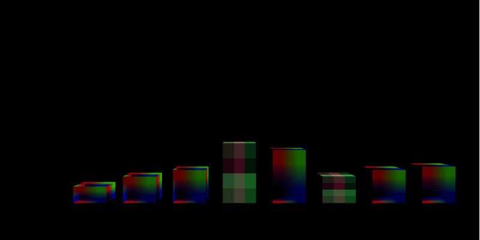

Example: xvisual
Copy the released template project form the release section.
Anclient has multiple samples (in the future) sharing node’s modules. You can also install those like this
-+- examples.js
|--- xvisual
|--- sampel-TODO
To install dependencies:
cd examples.js
npm install --save-dev
If everything is OK, following dependencies should be installed:
babel-plugin-syntax-jsx babel-preset-env
jquery
d3 earcut oboe
anclient
x-visual@0.3.81
Note: This example depends on x-visual webgl1 branch, version 0.3.81.
Install webpack for the sample project:
cd xvisual
npm init
npm install webpack webpack-cli --save-dev
Then use webpack transpile the source:
npm run build
or:
webpack
There are many way to host the index.html page, e.g. start a python server in examples.js (index.html used 2 level parent path):
python3 -m http.server 8080
Then browse to:
http://localhost:8080/xvisual/bar-chart/
This example also will visiting the jserv-sample data service. See JSample quick start for how to setup it.
Comming with the jserv-sample project is a sqlit3 db file configured as connection id = “raw-vec”. The database has a table named vector, with some data:

The example/xvisual/app.js created the Anclient querying data from jseer-sample:
let req = this.ssClient.query("raw-vec", "vector", "v", {page: 0, size: 20});
req.body[0]
.expr("vid").expr("val", "amount")
.expr("dim1", "person").expr("dim2", "year").expr("dim3", "age")
.expr("dim4").expr("dim5").expr("dim6")
.whereCond("=", "vgroup", "'80-'");
this.an.post(req, function() {
bar.create(vectors);
});
The examples/xvisual/bars.js will creating cubes with size of vector values. The geometry parameters of bars are bound with vector data:
function create(vectors) {
for (let i = 0; i < vectors.length; i++) {
let v = vectors[i];
let y = (v.amount - 95) * 2;
let h = y / 2;
this.ecs.createEntity({
id: v.vid,
Obj3: { geom: xv.XComponent.Obj3Type.BOX,
box: [20, y, 20],
transform: [ {translate: [i * 30 - 90, h, 0]} ]
},
Visual: {vtype: xv.AssetType.mesh,
asset: v.person === 'A2' ?
undefined : '../../assets/tex/rgb2x2.png'
}
});
}
return this;
}
The final result should like this (of which two of the bars using a default texture generated by x-visual):
